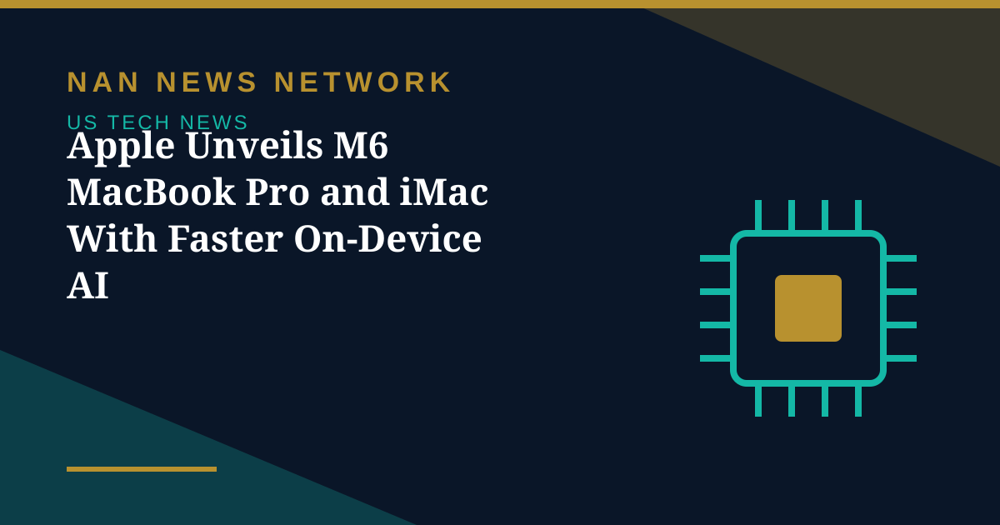

Hardware
Apple Unveils M6 MacBook Pro and iMac With Faster On-Device AI
Apple launched a new 14-inch MacBook Pro and iMac powered by its M6 chip, touting faster graphics and on-device AI performance ahead of an October 28 event in Los Angeles.
United States • Technology
AI, chips and the companies building the future.

Apple launched a new 14-inch MacBook Pro and iMac powered by its M6 chip, touting faster graphics and on-device AI performance ahead of an October 28 event in Los Angeles.
Apple launched a new 14-inch MacBook Pro and iMac powered by its M6 chip, touting faster graphics and on-device AI performance ahead of an October 28 event in Los Angeles.
OpenAI released GPT-6.1 Terra for ChatGPT Work, Codex and its API on October 26, offering a lower-priced model for work involving images and computer applications.
Elon Musk said SpaceX has closed $40 billion of debt to buy GPUs, and warned that more than 200 neocloud companies face consolidation as lending tightens.
OpenAI and Anthropic have quietly cut inference prices by up to 80 percent since June, driven by Chinese competition, better efficiency and perishable GPU capacity, according to a new analysis.

President Trump tapped Director of National Intelligence Jay Clayton to lead a new federal AI task force with 120 days to report on risks, opportunities and the government's role.

SpaceX revenue jumped 161% year over year to $14.6 billion, Starlink reached 13.6 million subscribers, and Flight 15 will attempt to catch both the booster and the ship.

A Department of Homeland Security order bars civilian agencies from buying DeepSeek products and requires removal of DeepSeek tools — including third-party services built on its models.